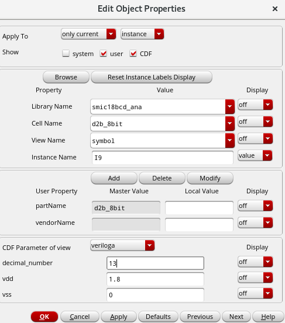

VerilogA 十进制转二进制模型（8bit DAC 行为级实现）
在模拟电路仿真中，经常需要为数字总线（bus）信号设置多 bit 输入。传统方式是逐位单独设置电压源，当位数较多时操作繁琐且容易出错。本文介绍一种基于 VerilogA 的 8 位十进制转二进制模型，只需修改一个十进制参数，即可自动生成对应的二进制电压输出，大幅提升仿真效率。
1. 设计思路
1.1 核心算法：除 2 取余
十进制转二进制的数学基础是除 2 取余法。对于任意十进制数 $D$，其第 $i$ 位二进制值 $b_i$ 可通过以下运算提取：
$$
b_i = \left\lceil \frac{D}{2^i} \bmod 2 \right\rceil = \left\lceil \frac{D}{2^i} - \left\lfloor \frac{D}{2^{i+1}} \right\rfloor \times 2 \right\rceil
$$
1.2 VerilogA 实现要点
| 要点 | 说明 |
|---|---|
genvar |
用于 analog 块内的循环变量 |
floor() / ceil() |
VerilogA 内置数学函数 |
transition() |
为输出电压添加平滑过渡，避免仿真不收敛 |
V(out[i]) <+ |
VerilogA 的电压贡献语句 |
2. 完整代码
1 | |
3. 代码解析
3.1 参数化设计
1 | |
仿真时只需修改 decimal_number 的值，模块会自动计算并输出对应的 8 位二进制电压信号。例如：
| decimal_number | 输出电压（out[7:0]） |
|---|---|
| 0 | 0000 0000 |
| 5 | 0000 0101 |
| 127 | 0111 1111 |
| 255 | 1111 1111 |
3.2 关键循环逻辑
1 | |
以 decimal_number = 5 为例：
| 迭代 i | x（初始） | z = x/2 | x = floor(z) | dout[i] = ceil(z-x) |
|---|---|---|---|---|
| 0 | 5.0 | 2.5 | 2.0 | 1 |
| 1 | 2.0 | 1.0 | 1.0 | 0 |
| 2 | 1.0 | 0.5 | 0.0 | 1 |
| 3~7 | 0.0 | 0.0 | 0.0 | 0 |
最终得到 dout = {0,0,0,0,0,1,0,1}，即二进制 0000 0101。
3.3 电压输出
1 | |
dout[i] * vdd：将 0/1 转换为 0V / 1.8Vtransition(..., 0, 0)：添加零延迟平滑过渡，避免电压跳变导致仿真器不收敛
4. 使用示例
在 Spectre / HSPICE 等仿真器中调用该模块：
1 | |

或在 VerilogA 测试平台中：1 | |
5. 扩展：N-bit 通用模型
将宏定义改为参数即可支持任意位数：
1 | |
6. 总结
本文介绍的 VerilogA 模型通过参数化设计，实现了十进制到多 bit 二进制电压的自动转换。相比手动设置每个 bit 的电压源，该方法具有以下优势：
- 修改方便：只需调整一个
decimal_number参数 - 可复用性强：通过参数适配不同位数和电源电压
- 仿真稳定：
transition()函数确保电压平滑变化 - 代码简洁：利用 VerilogA 内置数学函数，无需外部依赖
该模型特别适用于 ADC/DAC 行为级仿真、数字控制环路验证 等需要频繁调整总线输入值的场景。
VerilogA 十进制转二进制模型（8bit DAC 行为级实现）
https://huangch-ic.github.io/2026/08/30/verilogA-decimal-to-binary/